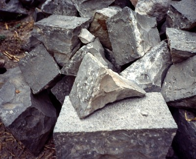
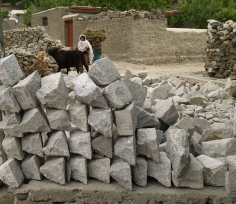

Granite [SPGR]
Granite is a light-colored igneous rock with a random arrangement of minerals grains large enough to be visible with the unaided eye. Granite is a coarse-grained, light-colored igneous rock composed mainly of feldspars and quartz with minor amounts of mica and amphibole minerals. This mineral composition usually gives granite a red, pink, gray or white color with light and dark mineral grains scattered throughout the rock. Granite polishes well and resists weathering and acid rain. Granite is hard and difficult to shape into regular blocks; for that reason it is mostly used for random rubble or semi-dressed stone masonry construction. Granite is generally resistant to scratching by metal.


Granite is used for wall construction in Maharashtra, India (S. Brzev)

Granite stone boulders prepared for construction, Pakistan (T.Schacher)


Granite was used for the construction of Inca building complex, Macchu Picchu, Peru (S. Brzev)